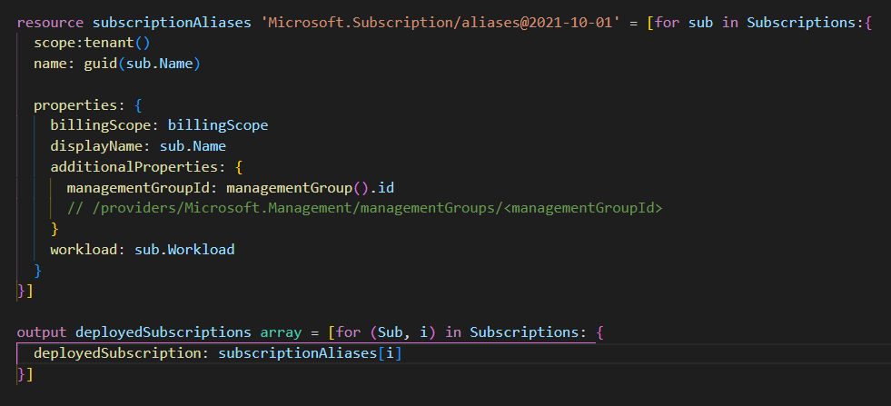
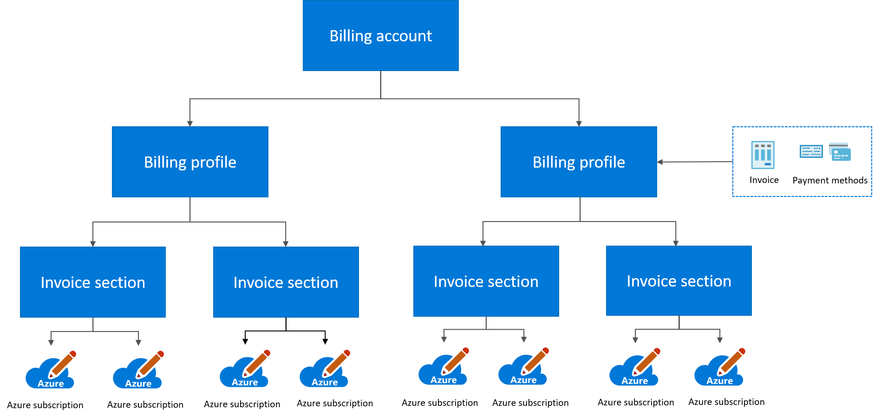

10 minutes
Deploying Azure Subscriptions, as Code

An Azure Subscription is a boundary in Azure for billing and also an access management boundary. Usually a subscription has one or more owners that will have control over spending and assigning access to resources and resource groups in that subscription. In large organisations there may be a lot of development teams sharing the same Azure tenant, but each team may have one or more subscriptions in the tenant. That will separate their workloads and billing while still allowing them to share the user identities, some hub networking and other services that may be accessed through a hub network.
Automation and self-service
When deploying subscriptions on a regular basis, it makes sense to provide self service capabilities and automate all the steps from requesting a new subscription to deploying the subscription, adding it to a management group, assigning blueprints, policies and other governance artifacts and tie the subscription to the internal billing.
You may also have a structure in place where you provide each team with more than one subscription to separate their production, development and test workloads.
In order to automate this process you need to deploy the subscriptions as code, instead of creating them through the Azure Portal. This blogpost will give you some hands on training on one of several possible ways to do these deployments.
Prerequisites
If you want to try this out yourself as a lab, you must first ensure that you have the pre-requisites ready.
This guide depends on the following:
| Tool | Link |
|---|---|
| Azure Bicep Cli | Bicep Cli install instructions |
| VSCode + Bicep Extension | Getting Up And Ready With VSCode and VSCode Productivity hints |
| Azure Powershell | Setup Azure Powershell |
| Azure Account | Register Free Azure Account |
| User account with sufficient privileges to create Management Groups in the Tenant Root group | Register Free Azure Account (See the “Enable Management Groups” section) |
| Management Groups (optional, you can create management groups manually if you want to) | Deploy ManagementGroups As Code |
Azure Billing
All subscriptions are tied to billingaccounts, billingscopes and an invoicesections. The Invoicesection is subordinate to a billingscope and the billingscope is subordinate to the billingaccount. More than one subscription can be tied to a single invoicesection. In my lab environent there is just one invoicesection, one billingscope and one billingaccount, tied to one payment method, which is a payment card.

You can read about billing at Microsoft Docs
Get the BillingScope
To create new subscriptions you need to get the billingscope you want to use for them, in the Azure portal it’s a fairly straight-forward process where you just select the billing account, billingscope and invoicesection. When you deliver subscriptions as code, it’s actually a bit more tediuos process. It’s basically three steps, get the billingaccount, billingprofile and invoicesection, and the id property of the invoice section is the billingscope.
Get the Billing Account Name
Since I’m running this lab on a trial subscription for demo purposes, there is just one single billing account.
$BillingAccountName = (Get-AzBillingAccount).Name
Alternative: Get the BillingAccount name, using filters
If you have more billing accounts you might need to use the PowerShell Where-Object cmdlet to filter out the billing account you want to use. You do this by sending the result of the Get-AzBillingAccount through the pipeline | to Where-Object and then you compare the DisplayName property with the name you have for your BillingScope.
$BillingAccountName = (Get-AzBillingAccount | Where-Object {$_.DisplayName -eq 'Your billing Account Display Name'}).Name
Notice that we use $_ for the object name, this means that when Where-Object loops through a list of all BillingAccounts that are returned from Get-AzBillingAccount, then the $_ variable will contain the current item being iterated in the loop. $_.DisplayName will then contain the displayname property of the current item in the loop. This is then compared to whatever displayname you enter after the -eq comparisor.
Get the BillingProfile
To get the BillingProfile you must use Get-AzBillingProfile cmdlet, this requires the BillingAccount Name you stored in the $BillingAccountName variable, in the previous command.
$BillingProfileName = (Get-AzBillingProfile -BillingAccountName $BillingAccountName).Name
Get the BillingScope
Now to finally get the whole billingScopeId you need to use Get-AzInvoiceSection, the Id of the InvoiceSection is the BillingScope. This cmdlet will need the BillingAccount Name that you stored in the $BillingAccountName variable. The cmdlet will also need to know the BillingProfile Name (Id).
$BillingScope = (Get-AzInvoiceSection -BillingProfileName $BillingProfileName -BillingAccountName $BillingAccountName).Id
Alternative: Get BillingProfile and BillingScope, single line (advanced)
$BillingScope = (Get-AzInvoiceSection -BillingProfileName ((Get-AzBillingProfile -BillingAccountName $BillingAccountName).Name) -BillingAccountName $BillingAccountName).Id
Again, I only have a single BillingProfile and a single InvoiceSection in my lab environment, making things pretty easy. For users with more than one Billing Profile or InvoiceSection, filters has to be used to get the right Billing Scope Id.
Alternative: Get Billingprofile and BillingScope using filters
Just like in the first step, you can use the Where-Object cmdlet to filter out the BillingProfile and the InvoiceSection you want to use. I find it pretty suitable to filter the DisplayName property for these objects, just like with the billing account.
$BillingProfileName = (Get-AzBillingProfile -BillingAccountName $BillingAccountName | Where-Object {$_.DisplayName -eq 'Your Billing Profile Display Name'}).Name
$BillingScope = (Get-AzInvoiceSection -BillingProfileName $BillingProfileName -BillingAccountName $BillingAccountName | Where-Object {$_.DisplayName -eq 'Your Invoice Section Display Name'}).Id
Alternative: Get Billingprofile and BillingScope using filters, single line (advanced)
Here both steps with filters are smashed into a single (long) line. I don’t reccommend this approach as it’s pretty hard to follow and debug.
$BillingScope = (Get-AzInvoiceSection -BillingProfileName ((Get-AzBillingProfile -BillingAccountName $BillingAccountName | Where-Object {$_.DisplayName -eq 'Your Billing Profile Display Name'}).Name) -BillingAccountName $BillingAccountName | Where-Object {$_.DisplayName -eq 'Your Invoice Section Display Name'}).Id
Now you could take it one step further and get the BillingAccount Name in the same line, using filters and all, but I won’t even bother since I totally recommend anyone to make their code readable and easy to debug. It’s most likely you that will sit there and curse at your past self when reading a piece of code you wrote a year earlier.
Building a subscriptions array
If you want to deploy several subscriptions at a single time, you can build an array of subscriptions to deploy. I’d probably use some kind of database or other data-source that the deployment process will read from, and trigger deployment functions that will carry out different parts of the deployment. I think its a good idea to separate the data from the code, but it’s up to you really. In the bicep file I have remarked a section where I have made the same subscriptions array as Bicep code. It’s another way of doing it, where you will be saving the subscription name and workload values with the source code of your bicep, instead of separating it to another datasource. It doesn’t give you the same opportunities for integration with some sort of self-service process, but it’s very simple.
$Subscriptions = @()
$Subscriptions += @{
Name = 'Prod Subscription 1'
Workload = 'Production'
}
$Subscriptions += @{
Name = 'Prod Subscription 2'
Workload = 'Production'
}
Build a Parameters Object
Now you add the $Subscriptions array and the $Billingscope variable to the $Parameters hashtable. These will be sent as input parameters to bicep when deploying the bicep file.
$Parameters = @{subscriptions = $Subscriptions; billingScope = $BillingScope}
The Bicep file
The reason I like to deploy using template deployments (Bicep or ARM) is that if you would use PowerShell cmdlets and loops to deploy each resource, it would call the Azure ARM Api once for every resource instead of just calling the Api once to deliver the deployment template. Once a deployment has been submitted to Azure, the deployment will be carried out by Azure Resource manager independently of your PowerShell session. You’ll notice that this is way more efficient when deploying lot’s of resources in a single deployment.
Make sure to download the main.bicep and if you want to you can also download a file with all the powershell commands subscriptionsdeploy.ps1. It’s a good idea to write your own bicep file and use the downloaded as reference, just to learn the syntax and the logic of the bicep files. Remember that Ctrl+Space will give you intellisense syntax help.
targetScope
We are deploying this template to a managementGroup, the targetScope must match the scope we deploy to.
@decorator
This decorator is for the billingScope parameter, this decorator provides a description for the parameter. There are other decorators available like “allowed(values)”, you can see what’s available if you just type the @ sign in the row above the parameter declaration, VSCode will bring up the Bicep intellisense.
param billingScope string
This is a parameter, we will supply the billingScope we retrieved previously to this parameter when running the deployment command.
param Subscriptions array
We will supply the array of subscriptions we created with PowerShell to this parameter when we run the deployment command.
/*
Remarked section (starting with /* and ending with */), this is just to show how you can build the array in the bicep file instead of using a parameter.
resouce subscriptionAliases
This is the resource that will create the subscription, the type is called alias. This is the resource that will automate the subscription creation process.
I have created a for loop here that will take all the subscription objects in our array and create one subscription alias for each of these. In each iteration the current object in the Subscriptions array will be accessible in the object sub.
Scope:
This bicep template is using a “scope escape” for this resource in order to create a tenant scope resource (subscription aliases) while being invoked as a management group deployment. The actual subscription will be deployed in a management group.
Name:
The name of the alias is not the name of the subscription, the alias is more like a deployment job that creates the subscription. I’ve chosen to generate a guid from the displayname I have chosen for the subscription (sub.name).
billingScope:
Here we just consume the billingScope parameter defined earlier.
displayName:
This will be the displayName of the actual subscription, for each subscription we will use the sub.name object as the deployment loops through the array.
additionalProperties{managementGroupId:}
This is the managementGroup the subscription will be deployed to. We use the same managementgroup that we have chosen to do this bicep deployment to, by using the managementGroup() function in bicep to get the id.
workload
There are different workloads available like ‘Production’ and ‘Devtest’, the sub.workload value, from the array we defined, is being used to set the subscription workload.
output
Again we use a for loop to iterate through the subscriptions, but here we have added the counter i. In each iteration the i will increase and we will use it to get the object with that index in the array. This gives us the subscription details like subscriptionId’s in the output from the deployment. In an automated process you may want to update the datasource with these.
Deploy the Subscriptions
Finally, we are ready to deploy this!
First, if your PowerShell session connection to Azure has expired, you may need to re-authenticate.
Connect-AzAccount
Now you can go ahead with deployment.
Note that I have chosen to deploy my subscriptions to the managementgroup ‘Corp’ that was created in the last blogpost. In Location you can use your Azure location of preference.
#Splatting parameters to make it more readable
$Params = @{
ManagementGroupId = 'Corp'
Templatefile = '.\main.bicep'
TemplateParameterObject = $Parameters
Location = 'WestEurope'
Name = "Subdeploy_$(Get-Date -Format "MM-dd-yyyy_HH.mm")"
}
#Deploy the Subscriptions
New-AzManagementGroupDeployment @Params
Conclusion
Now you know a way to deploy subscriptions as code. This technique can be one piece of the puzzle to automate your subscription deployment process.
Please follow me on LinkedIn and let me know if you like my blog.